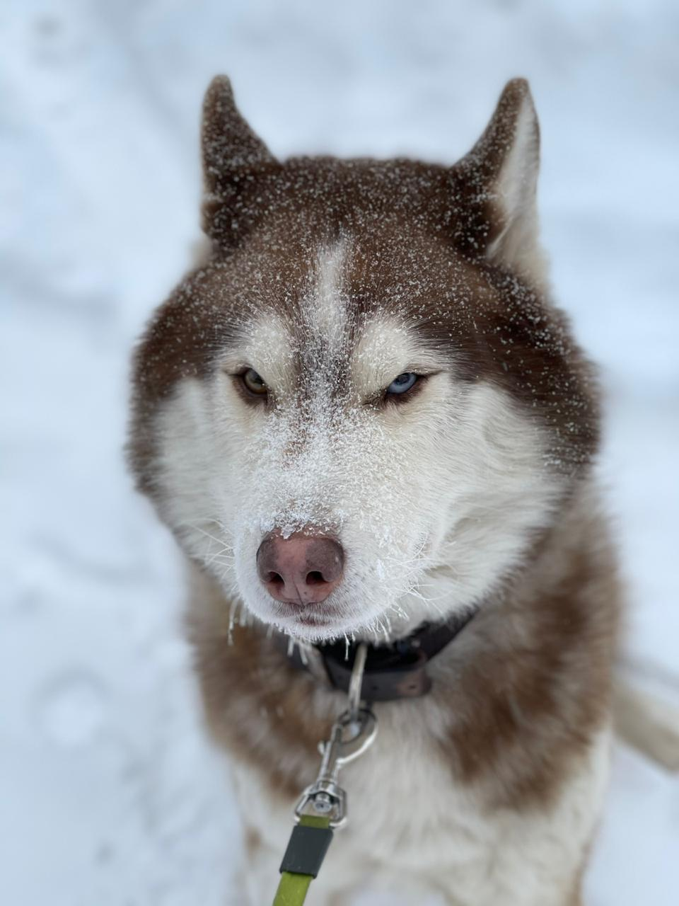
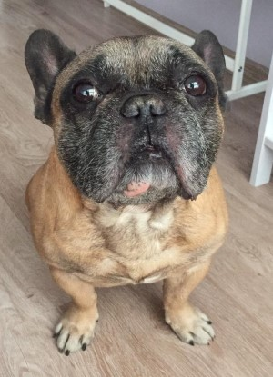
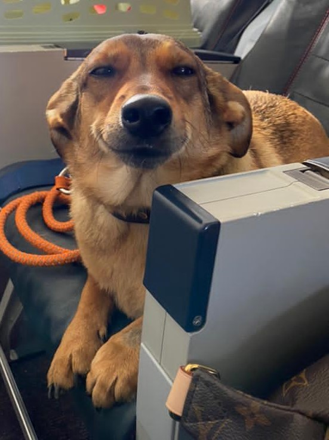
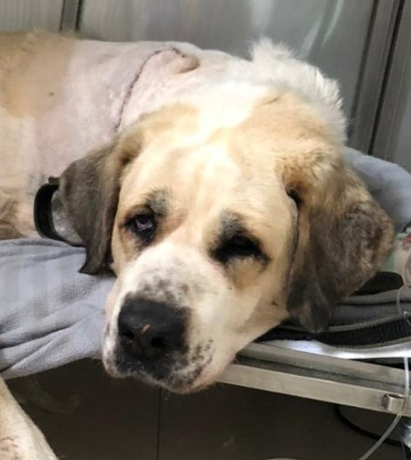

Собака Егорᗐ

Порода хаски
11 лет
Пол: Некастрированный кобель
Егор поступил в клинику по поводу хромоты,
отёка и болезненности правой грудной конечности в ноябре 2017 г.
в возрасте 7 лет.
Диагноз: Остеосаркома
Для постановки диагноза Егору били проведены следующие обследования:
- Полный клинический осмотр онкологом
- УЗИ органов брюшной полости
- Рентген органов грудной клетки и больной конечности
- Общий клинический и биохимический анализы крови
По результатам обследования было выявлено новообразование кости и был поставлен предварительный диагноз Остеосаркома. Для подтверждения диагноза провели взятие биопсии для гистологического исследования, по результатам которого был поставлен окончательный диагноз: Остеосаркома и предложено несколько вариантов лечения:
- Полная ампутация грудной конечности
- Операция по удалению опухоли и сохранению конечности
- Химиотерапия
- Лучевая терапия
Владельцем была выбрана операция по сохранению конечности и проведение химиотерапии. Для изготовления специальной пластины провели КТ диагностику конечности. Пока готовилась пластина, Егору провели первый курс химиотерапии, далее провели операцию и далее химиотерапию (всего 6курс) Егор каждые 3 недели проходил обследования:
- Полный клинический осмотр онкологом
- УЗИ органов брюшной полости
- Рентген органов грудной клетки и больной конечности
- Общий клинический и биохимический анализ крови
Через год у Егора были обнаружены метастазы в лёгких, провели КТ грудной клетки и удаление доли легкого. И далее опять 6 курсов химиотерапии. Все курсы химиотерапии Егор перенёс очень хорошо, без побочных эффектов. Перед каждым введение химиопрепарата Егору проводили общий клинический анализ крови для определения влияния химиотерапии на организм. Общая продолжительность жизни после удаления опухоли составила 3,5 года! Это больше мировой статистики на 2-2,5 года Летальный исход в мае 2021 г по причине, не связанной с остеосаркомой
Собака Ричардᗐ
 Порода французский бульдог 10 лет Некастрированный кобель Владельцы стали замечать, что Ричард стал мало есть, плохо дышать, худеть и расчесывать морду. В области расчесал появилась припухлость (можно увидеть на фото) Диагноз: Мастоцитома Пациентам с подозрением на онкологическое заболевание всегда проводят дополнительные обследования, которые включают в себя:
- Приём онколога
- Биопсию из новообразования для цитологического и/или гистологического исследования (для постановки диагноза)
- УЗИ органов брюшной полости
- Рентген органов грудной клетки
- Общий клинический и биохимический анализы крови
Эти обследования проводятся для постановки диагноза и определения стадия онкологического заболевания К сожалению, у Ричарда была выявлена мастоцитома и метастазы в подчелюстные лимфатические узлы. Стадия заболевания 3я из 4х возможных. Как правило, пациентам с таким заболеванием и в такой стадии назначается химиотерапевтическое лечение. Причём можно выбрать несколько вариантов химиотерапии. Мы выбрали низкодозную химиотерапию, при которой пациент получает препарат в таблетках ежедневно. Такое лечение пожизненное. На фото мы видим, как опухоль уменьшилась через 2 недели и месяц лечения соответственно! На сегодняшний день Ричард проходит лечение уде 6 месяцев. За это время не было выявлено никаких побочных эффектов: самочувствие у Ричард отличное, одышка прекратилась, аппетит нормализовался, вес не теряет, рвота и диарея отсутствуют, опухоль постепенно уменьшается, а лимфатические узлы пришли в норму и метастазов в лимфатических узлах нет. Ричард ежемесячно проходит осмотр у лечащего врача и сдаёт клинический анализ крови, в котором не выявлено никаких отклонений. Каждые 3 месяца проводим Ричарду УЗИ органов брюшной полости и рентген органов грудной клетки. Отклонений тоже не выявлено. С уверенностью можем сказать, что Ричард находится в стойкой ремиссии.
Собака Арияᗐ
 Порода: метис Возраст: примерно 4-5 лет Пол: самка Кличка: Ария Жалобы и симптомы: у Арии в течение 2х лет наблюдались проблемы с желудочно-кишечным трактом: диарея, рвота, пища плохо усваивалась, Ария активно худела. Обратились в ближайшую клинику, где провели диагностику, поставили диагноз Гастрит и назначили лечение. Лечение помогла, симптомы прошли. Но, как только прекращали лечение, все симптомы опять возвращались. На очередном УЗИ были выявлены изменения в виде утолщения стенки кишечника, увеличения селезенки, печени и лимфатических узлов. Лечащий врач предположил онкологическое заболевание Лимфома (тк это характерные признаки для этого заболевания) и рекомендовал удалить селезенку и лимфатические узлы и провести химиотерапию «в слепую», тк в городе, где живет Ария, нет морфолога. Владелица решила, что нужна консультация онколога и записалась на консультацию в нашу клинику. Проведя консультацию, мы рекомендовали взять биопсию под контролем узи для цитологического исследования и после назначить симптоматическую терапию. Ария со своей хозяйкой полетели в другой город за этой услугой. Цитологию провели, но мнения врачей морфологов разделилось: один сказал, что точно лимфома, другой сказал, что точно воспаление! Лечащий врач в другой клинике рекомендовал немедленно начать химиотерапию. Химиотерапию стали проводить, но Ария стала плохо себя чувствовать, а симптомы сохранялись. Владелица Арии приняла решение прилететь к нам в клинику и пройти все обследования и проверить цитологию. По результатам обследования мы исключили лимфому, назначили лечение для гастро-энтерита и отправили Арию домой проходить лечение. Терапия помогла: симптомы полностью ушли, аппетит и стул нормализовались, Ария потихоньку стала набирать вес. На сегодняшний день Ария прекрасно себя чувствует и без лечения) Уважаемые владельцы, химиотерапия - это сложное лечение, обладающее побочными эффектами. Желательно проводить химиотерапию только при морфологическом подтверждении диагноза!
Собака Дусяᗐ
 Порода: алабай Возраст: 11 лет Кличка: Дуся Диагноз: остеосаркома Жалобы и симптомы: Дуся в течение нескольких недель стала сильно хромать на правую грудную конечность, постепенно Дуся перестала опираться больную ногу, аппетит сначала снизился, а потом совсем пропал, вес стал активно снижаться. Обратились в ближайшую клинику, где поставили диагноз Артроз и назначили обезболивающие средства и антибиотики. Дусе не становилось лучше. Когда обратились в нашу клинику, Дусе провели все обследования, входящие в онкоскрининг:
- УЗИ органов брюшной полости
- Рентген органов грудной клетки и больной конечности
- Общий клинический и биохимический анализ крови
По результатам обследований предположили остеосаркому и взяли под анестезией биопсию для гистологического исследования. Так как у Дуси был выявлен сильная болезненность и по результатам обследования, ввели Дусе внутривенно препарат, который сеял боль и Дуся начала понемногу есть. Диагноз подтвердился. Стадия заболевания 2b. Владельцу предложили провести Дусе ампутацию грудной конечности и химиотерапию. Владельцы сомневались, стоит ли проводить ампутацию или оставить все, как есть?! После долгого обдумывания и согласования и обсуждения проблемы с лечащим врачом, приняли решите ампутировать! Пока думали, Дусе был проведён первый курс химиотерапии. После операции химиотерапию продолжили. Сейчас Дуся чувствует себя отлично: аппетит активный, на прогулках активная (конечно на 3х лапах ей сначала было сложнее, но потом она привыкла), набрала немного вес (следим за весом, чтобы не нагружать конечности). По результатам очередных обследований метастазов не выявлено .